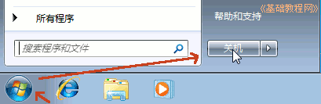

Windows7 基础入门教程
作者：TeliuTe 来源：基础教程网
开机关机 返回目录 下一课电脑一个精密电子设备，操作中应看准和细心；
1、开机
1）一般电脑一般包括显示器和主机，显示器的电源开关一般在屏幕右下角，旁边还有一个圆竖线图标，轻轻的按到底、松开，这时指示灯变亮，闪一下成为桔黄色表示显示器电源已经接通；
2）主机的开关一般在机箱正面，一个最大的圆形按钮，也有的在上面，也有个指示灯，
轻轻的按到底、再松开，稍等指示灯变亮，听到机箱里发出声音，显示器灯由桔黄变绿色，主机电源已经接通；
3）很多的电脑都配有稳压电源或者UPS不间断电源，这时就要先开启这些设备，等到他们的指示灯变亮稳定后再开启电脑的电源；
4）电脑的电源接通后接着就是耐心等待，这时会看到主机上的红灯不停的闪烁，这是里面的硬盘正在紧张工作；
5）等到音箱里传出音乐声，桌面上的鼠标指针不再闪动，屏幕右下角的所有东西都出来了，这时电脑就启动成功了；
6）启动成功的电脑处于等待状态，过一段时间屏幕就自动出现一个变换的画面，这是屏幕保护程序在运行，防止显示器某个地方长时间太亮烧坏；
7） 再长时间显示器就会变黑，指示灯变桔黄色，这是系统的电源管理自动进入省电模式，这时主机的指示灯仍然亮着，移动一下鼠标，或者按一下空格键就会恢复正常；
2、关机
1）关机是指电脑的系统关闭和切断电源，先要关闭所有打开的窗口；
2）有时会出现一个对话框，提醒是否保存文件：
这时，没用的就点“不保存”关闭，有用的文件就点“保存”，然后输入文件名，关完所有窗口，屏幕下面的任务栏中间是空的，没有白亮的图标，
3）这时就可以单击左下角的“开始”按钮，再点击右边的“关机”，

这时提示“正在关机...”，稍等主机上的电源指示灯熄灭，显示器上的指示灯变成桔黄色，
4）再按一下显示器的开关，关闭显示器，指示灯熄灭，这时电脑就安全的关闭了，
如果有稳压电源 、UPS 再关闭它们，
5）注意开机、关机之间要隔上一段时间，千万不能反复按开关，一般心里默数到20以后再开 ；
注意讲究卫生，保护眼睛，保持干净整洁，凳子摆放整齐；
3、练习：
1）指出电脑上显示器和主机的电源开关和指示灯；
2）练习一遍开机和关机，注意关机后等上一段时间再开机；
本节学习了计算机开机和关机的基础知识，如果你成功地完成了练习，请继续学习下一课内容；
本教程由86团学校TeliuTe制作|著作权所有
基础教程网：>http://teliute.org/
美丽的校园……
转载和引用本站内容，请保留作者和本站链接。